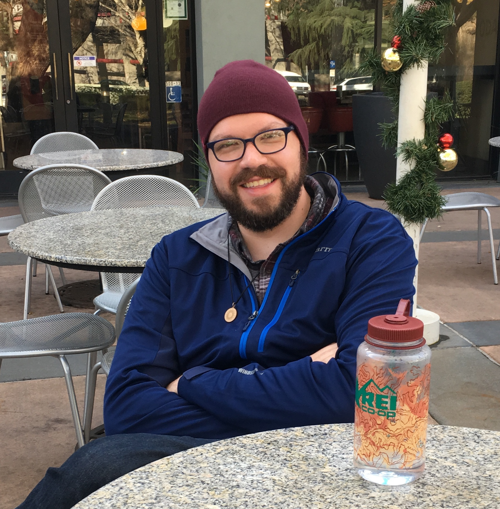

Aaron Alexander, PhD
Postdoctoral Researcher
Civil and Environmental Engineering
University of Wisconsin-Madison
Contact Information
Email: alexander@wisc.edu
Office: TBD
Education
- Ph.D., Civil and Environmental Engineering, University of Wisconsin-Madison
- M.S., Civil and Environmental Engineering, University of Wisconsin-Madison
- B.S., Civil Engineering, [Previous Institution]
Research Interests
Aaron's research focuses on urban hydrology, ecohydrology, and the interactions between urban environments and water systems. His work involves understanding how urban development affects water and energy balances, particularly in relation to surface energy balances, heat, and humidity in city-scale environments.
Selected Publications
- Alexander, G.A., D.B. Wright, C.B. Voter, S.P. Loheide, City-Scale Evaluation of Urban Ecohydrologic Processes on Surface Energy Balances, Heat, and Humidity, Urban Climate, 2025.
- Alexander, G.A., C.B. Voter, D.B. Wright, S.P. Loheide, Urban Ecohydrology: Resolving Sub-Grid Lateral Water and Energy Transfers in a Land Surface Model, Water Resources Research, 2024.
Biography
Aaron Alexander is a Postdoctoral Researcher in the Hydroclimate Extremes Research Group. His research combines urban hydrology with ecohydrology to better understand how cities interact with water and energy systems. Aaron's work is particularly focused on developing and improving land surface models to better represent urban environments and their impacts on local and regional climate.